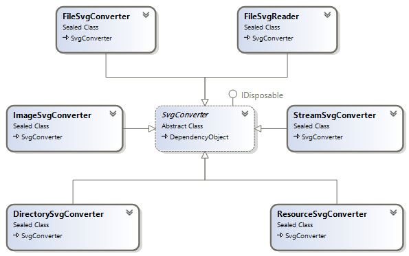

SVG Converters
The SVG to WPF conversion is the main use of this SharpVectors library currently. The other uses will be improved with time. The following is a diagram showing all the available converters.

- FileSvgConverter: This converts the SVG file to the corresponding XAML file, which can be viewed in WPF application. The root object in the converted file is DrawingGroup.
- FileSvgReader: This converts the SVG file to DrawingGroup and can optionally save the result to a file as XAML.
- ImageSvgConverter: This converts the SVG file to static or bitmap image, which can be saved to a file.
- StreamSvgConverter: This converts the SVG file or stream to static or bitmap image, which can be saved to a stream. This can be used for ASP.NET pages.
- DirectorySvgConverter: This converts a directory (and optionally the sub-directories) of SVG files to XAML files in a specified directory, maintaining the original directory structure.
- ResourceSvgConverter: This converts multiple directories (without the sub-directories) of SVG files and SVG files a DrawingGroup XAML.
Now, as shown SvgConverter is the base class for the converters and defines the following common properties:

- DrawingSettings: This is the rendering options class, WpfDrawingSettings.
- SaveXaml: Determines whether to save conversion output to XAML format.
- SaveZaml: Determines whether to save conversion output to ZAML format, which is a G-zip compression of the XAML format, and similar to the SVGZ (for SVG).
- UseFrameXamlWriter: Determines whether the use the .NET Framework version of the XAML writer when saving the output to the XAML format. The default is false, and a customized XAML writer is used.